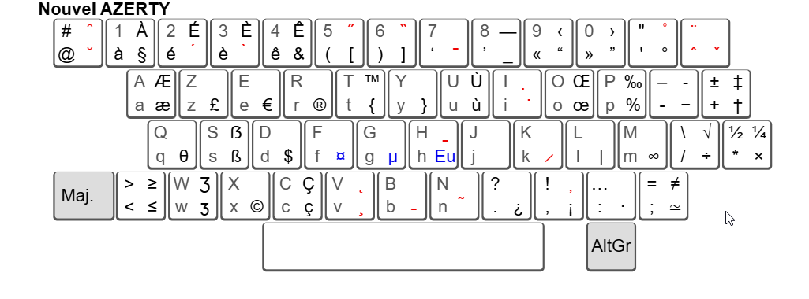

Clavier
Images
ISO QWERTY

AZERTY

Nouvel AZERTY

Aller sur le site https://norme-azerty.fr/
Clavier BÉPO

Aller sur le site https://bepo.fr/wiki/Accueil
Clavier Galéron
Aller sur le site http://accentuez.mon.nom.free.fr/Clavier-DispositionClavierGaleron.php
AZERTY MAC

Clavier Visuel Windows (touche AltGr enfoncée)
Liste des Touches du claiver AZERTY français
Test du clavier
Clavier complet : https://en.key-test.ru/
Code JavaScript simple keyUp / keyDown : https://javascript.info/keyboard-events#keyboard-test-stand
Nombre et disposition
Clavier standard : 105 touches au total + touche Fn.
Gauche : 76 touches
Esc + 12 fonctions
Chiffres : 14 touches
(Tab) : 14 touches
(Caps Lock) : 13 touches
(Shift) : 13 touches
(Ctrl) : 8 touches
Milieu : 13 touches
Pavé numérique : 17 touches
Touches de caractère
1 touche
Fn6 touches de modification
⇧ LShift MajGauche ⇧ RShift MajDroit⌃✲⎈ LCtrl CtrlGauche, ⌃✲⎈ RCtrl CtrlDroit⎇ LAlt AltGauche, ⎇ AltGr
1 touche
⎋ Escape Échap2 touches système rarement utilisées
PrnScn Imprécr/SysRq SystPause/Break Attn
3 touches Window
⊞❖ LWindows, ⊞❖ RWindows, ▤ Menu3 touches de blocage :
‚á≠ NumLock VerrNumüÑ∞ ‚á™CapsLock VerrMaj‚á≥ScrollLock Arr√™tD√©fil (rare)
5 touches d'édition :
↩ ⏎ ↵ Return Retour chariot (similaire à ⌤)⌤ ⌅ Enter Entrée⎀ Ins⌦ Del Suppr⌫ ⟵ Bacskapce Retour arrière
9 touches de navigation
⭾ Tab↖ Home Début, ↘ End Fin⇞ PgUp Pg préc, ⇟ PgDwn Pg suiv←, ↑, →, ↓
12 touches de fonction
F1 F2 F3 F4 F5 F6 F7 F8 F9 F10 F11 F1215 autres touches sur le pavé numérique, dont ⎖ Séparateur de décimal
49 touches de caractère
Windows vs MacOS
Windows :
Ctrl ❖ Window Alt ▤ MenuMac :
Ctrl, ‚å• option (Alt), ‚åò command
Clavier et programmation
Touche Fn et F-Lock
La touche
Fnn’est pas gérée par le système d’exploitation.La touche
Fnest une touche de modificationLe nombre de touches sur un clavier est très variable. Certains claviers n’ont pas de pavé numérique et les 13 touches au milieu du clavier sont absentes ou disposées autrement. La touche
Fnplus une autre touche permet de simuler l’appui sur une touche manquante.La touche
Fnpermet d’ajouter d’autres commandes : régler le volume sonore, régler la luminosité, etc.La touche
F-Lockpermet de déterminer si un appui sur la touche F1 affiche l’aide ou bien lance la commande comme si on avait appuyé surFn + F1.
Touches particulières
Ctrl + Alt + Deleteétait interceptée par le BIOS et permettait de redémarrer un PC. Quasi impossible à simuler par logiciel sous Windows. L’équivalent sous macOS :⌘ Command + ⌥ Option + Esc.Breakest un cas particulier.Ctrl + PauseouCtrl + Attn(Attn=Attente), elle permet d’interrompre un programme en cours d’exécution. En PowerShell, cette touche démarre le débugger.Ctrl + Cinterrompt également un programme en cours d’exécution,Ctrl + Breakest plus fort queCtrl + Cet moins facile à contourner.Sous Windows,
Ctrl + Altest similaire àAltGrmais il est possible de différencier les deux.Où se trouvent les touches
Pause/Break,NumLock,ScrollLocksur votre clavier ? Une combinaison de touches produit-elle lesscancodecorrespondants ?
Notion : Scancode

Chaque touche du clavier est considérée comme un interrupteur, lorsqu’on appuie sur une touche, le clavier renvoie un numéro que l’on appelle le scan code. Lorsqu’on relâche la touche, le clavier envoie à nouveau un scan code à l’ordinateur. Mais certaines touches ne renvoient pas un scan code, mais deux ou trois : le premier octet envoyé est toujours 224 (0xE0 en hexadécimal), ou 225 (0xE1) (touche Break qui envoie 0xE1 0x1D 0x45 et 0xE1 0x9D 0xC5).
Une touche Origine pressée envoie 0x47, l’autre (sur le pavé numérique) envoie 0xE0 0x47. Le code envoyé au relâchement de la touche est identique.
Notion : Touche virtuelle
La liste des touches virtuelles dépend du système d’exploitation. La touche virtuelle VK_F1 (ou équivalent) signifie que la touche F1 a été pressée. La correspondance entre les scancode et les touches virtuelles est effectuée par le pilote de clavier.
Certaintes touches multimédia, par exemple pour gérer le volume audio, sont des touches virtuelles. Voir la liste pour Windows.
Notion : Touches de modification
Sous Windows,
⇧ Shift, ⌃ Ctrl, ⎇ Altsont des touches de modification facilement détectables (avec ou sans différencier droite et gauche).Il est facile de détecter si
⇭ NumLockou⇪ CapsLocksont activésLes touches
⇮ AltGr, ⊞ Win, ⌘ Cmd, Fnsont également des touches de modification mais fonctionnent différemment.
Notion : Deadkey / Touche morte
Une deadkey ou touche morte provoque un événement clavier mais ne produit pas de caractère. Le symbole est combiné avec la touche suivante. Sur le clavier AZERTY, nous avons trois touches mortes (quatre diacritiques):

◌̀
accent grave àèìòù ÀÈÌÒÙ◌̂
accent circonflexe âêîôû ÂÊÎÔÛ◌̈
tréma äëïöüÿ ÄËÏÖÜ◌̃
tilde ãñõ ÃÑÕNon présentes sur le clavier AZERTY :
◌́
accent aigu éÉ◌̧
cédille pour les lettre ç et Ç
Notion : Ligatures
Au niveau du pilote de clavier, il est possible de définir des ligatures mais le clavier AZERTY français n’en comporte aucune.
La langue française comporte deux ligatures :
æÆcomme dansLætitiaetœŒcomme danscœurouŒuf.&etwsont des ligatures :Etvv
Notion : HotKey / Raccourci / Touche système
Une HotKey ou un raccourci clavier est généralement une combinaison de touches (avec Ctrl ou Alt) qui permet d’exécuter une commande. Certains raccourcis sont définis au niveau du système d’exploitation mais les programmes ont une grande liberté.
Selon les besoins et les fonctions utilisées, il sera possible/souhaitable ou non de détecter la différence entre Shift gauche et Shift droit.
Événements clavier
Le contrôleur électronique du clavier, le système d’exploitation et le pilote traitent les cas particuliers. Le système d’exploitation transmet les événements clavier aux services qui écoutent ces événements (keylogger, AutoHotkey) et à l’application active.
Le système d’exploitation permet aux processus des applications de capturer les événements suivants :
touche enfoncée, avec son
scancodetouche relâchée, avec son
scancodetouche pressée (enfoncée puis relâchée)
caractère(s)saisi(s), dans le codage local (windows-1252) ou enUTF-16.
Plusieurs fonctions de bas niveau sont disponibles. Certaines renvoient directement le caractère saisi, d’autre sont plus précises. La manière de déterminer la touche (fléche de direction) ou le caractère (lettre) dépend de la fonction utilisée. Se référer à la documentation correspondante.
Transformation en caractère
Au niveau du pilote du clavier (fichier .h générique), à certaines combinaisons de touches (scancode + modificateurs + touches mortes) sont associées un caractère.
Par exemple, la touche e située entre le z et le r permet de produire les caractères suivants avec Shift, AltGr (Ctrl + Alt) et les touches mortes : eE€ êëè ÊËÈ ˆ€¨€`€. Le raccourci ⊞ Win + e ouvre l’explorateur de fichier et ⊞ Win + Shift + e est défini dans Visual Studio Code. Cela fait 14 comportements différents pour une seule touche, dont 5 sans tenir compte des touches mortes !
Au niveau du pilote de clavier, dans l’exemple ci-dessus, l’encodage est soit ascii soit Unicode (probablement UTF-16). Le système d’exploitation impose les encodages possibles aux pilotes.
Le système d’exploitation fournit aux applications les caractères frappés au clavier. Les caractères sont presque toujours réencodées par le système d’exploitation et/ou par les applications (ISO 8859-15,Windows-1252, UTF-8, UTF-16, etc.) avant d’être traités par les applications.
Redéfinir les touches de clavier
Plusieurs solutions permettent de redéfinir le comportement des touches de clavier :
Installer un autre pilote de clavier : clavier galéron qui ajoute des touches au clavier azery classique, bépo qui replace les touches selon la fréquence d’utilisation, azerty NF Z71-300 qui complète le clavier azerty français
Microsoft PowerToyspermet de remapper certaines touches.AutoHotKey. Très complet et flexible.AutoHotKeyaffiche lescancodedes touches. On ajoute des symboles pour les modificateurs. On associe un comportement à une touche ou une combinaison de touches.
Saisie Unicode / caractères spéciaux
Table des caractères
Le plus simple : chercher le caractère souhaité dans la table des caractères.
Windows : Alt ou AltGr
Avertissement : non testé
Pressez la touche Alt + nnn (trois chiffres) ou Alt + 0nnn pour produire un caractère qui dépend de la page de code (437, 850, windows-1252).
Alt + 8364 devrait produire le symbole €.
Dans la clé de registre HKEY_CURRENT_USER\Control Panel\Input Method mettez EnableHexNumpad à 1. Alt + x20AC devrait produire le symbole € (ou Alt + c20AC) dans certaines applications.
Linux : Ctrl + Shift + U
Possible sous Windows grâce à Unicode DB IME for Windows. Il faut mettre le clavier en anglais, lancer l’application, appuyer sur Ctrl+Shift+u+ù ou sur Ctrl+Shift+u+'. Cela permet de rechercher un caractère Unicode d’après son nom.
Avertissement : non testé
Ctrl + Shift (maintenir enfoncé) u + code hexadécimal puis relâcher Ctrl + Shift.
MacOS
Avertissement : non testé
Nécessite l’activation de la saisie hexadécimale.
Clavier Visuel
Le clavier Visuel de Microsoft, qui permet de trouver un caractère, un emoji, un gif animé... Pour l’ouvrir, il faut aller dans Paramètres.
Internet
FileFormat.Info - Unicode pour plus des détails techniques
Compart.com - Unicode qui explique Unicode et permet de trouver des caractères Unicode.
Voir et tester des dispositions de clavier
Site branah.com

Le pilote du clavier azery français sous Linux est plus complet :
Divers / Icônes complémentaires
‚≠ø Tabulation verticale
‚èè Eject
‚åΩ Power
‚çΩ No break space
␣ Space
Source
https://commons.wikimedia.org/wiki/File:ISO_keyboard_(105)_QWERTY_UK.svg
https://commons.wikimedia.org/wiki/File:Clavier-Azerty.svg
https://norme-azerty.fr/
https://static.macway.com/images/p/g/originalid_2500/100/2654/main/2654_0540707.jpg (Amazon - Apple Magic Keyboard 2 - Blanc - Français)
https://www.acrobatfaq.com/atbref5/index/KeyboardShortcuts/UnicodeCodesforKeyboards.html
http://xahlee.info/comp/unicode_computing_symbols.html
http://xahlee.info/kbd/apple_pc_kb_diff.html
https://github.com/TaranVH/2nd-keyboard/blob/master/README.md
https://www.autohotkey.com/docs/v2/KeyList.htm
https://en.m.wikipedia.org/wiki/Template:Key_press
https://github.com/wikthewiz/windows_keylogger/
https://github.com/microsoft/Windows-driver-samples/blob/main/input/layout/all_kbds/kbdfr/kbdfr.c
https://en.m.wikipedia.org/wiki/IBM_PC_keyboard#Keyboard_layouts
https://github.com/microsoft/Windows-driver-samples/blob/main/input/layout/all_kbds/kbdfr/kbdfr.c
https://github.com/awakecoding/Win32Keyboard/blob/master/kbd.h
branah.com